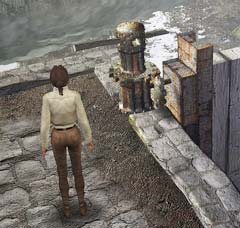

| 概要 | 地図 | |
| 淡いヒント集 | ヒント集 | 的確なヒント集 |
| 攻略最短ルート | Syberia 攻略へ |
| << 前の段階へ | 地域選択へ | 次の段階へ >> |
バラディレーン
ダム
 ・どうやって動かすか。 ・動かすと、どこか変化するのだろうか。 ・時には他人の力も借りなければならない。頼りになりそうなのは誰か。 ・故障しているのならば、代替品を探すという手もある。
ボート
 ・ボートのそばに有用なものが落ちているのだろうか。 ・落ちているのならば、どうやって手に入れるべきか。 ・他人の手を借りる場合は、誰に頼めばよいか。
出発前
 ・オスカーは何を求めているか。 ・オスカーが求めているものを受け取らない場合は、何か欠けていることがある。 ・オスカーに渡すべきものをよく観察してみよう。 ・切符はどこで手にはいるか。駅ならば、近くにあるはずだ。 ・パスポートのようなものが必要である。そのパスポートには、何か足りないものがあるのかもしれない。 ・彼の話した内容にも注意を払うべきだ。 |
| << 前の段階へ | 地域選択へ | 次の段階へ >> |
| 概要 | 地図 | |
| 淡いヒント集 | ヒント集 | 的確なヒント集 |
| 攻略最短ルート | Syberia 攻略へ |
Syberia
| 目次へ戻る | ページの上部へ |